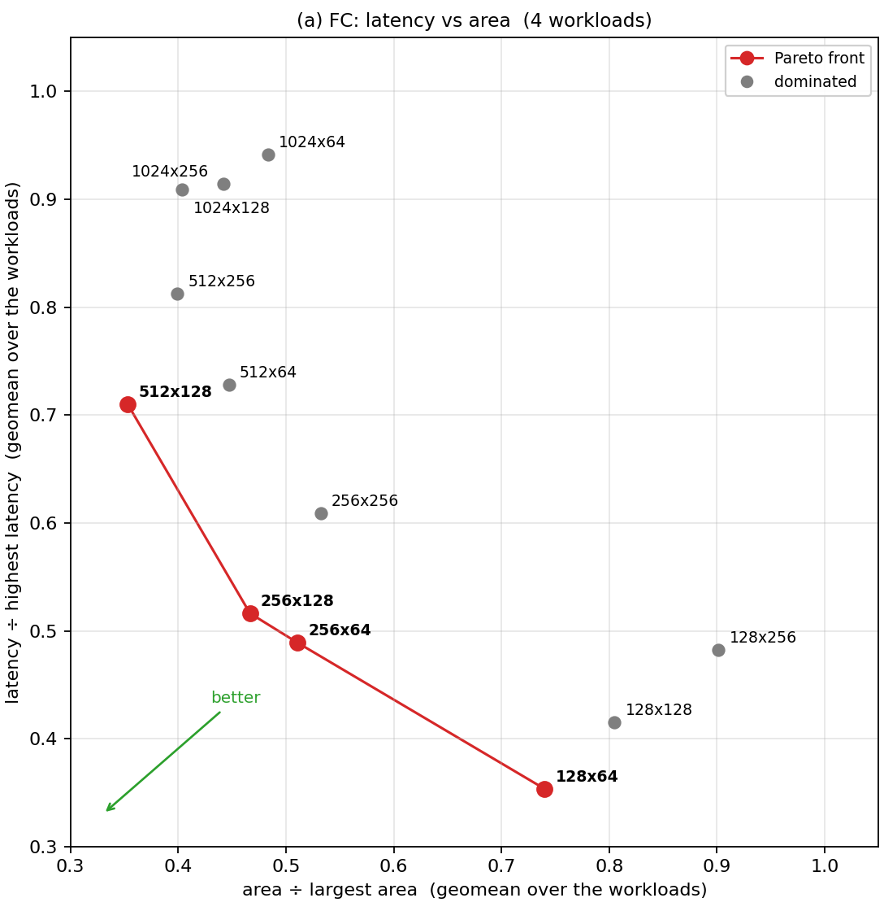
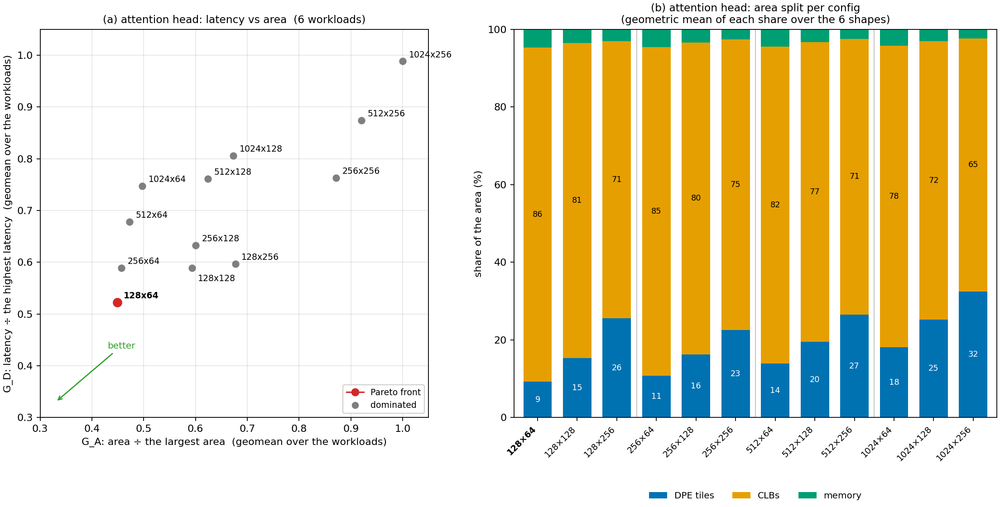
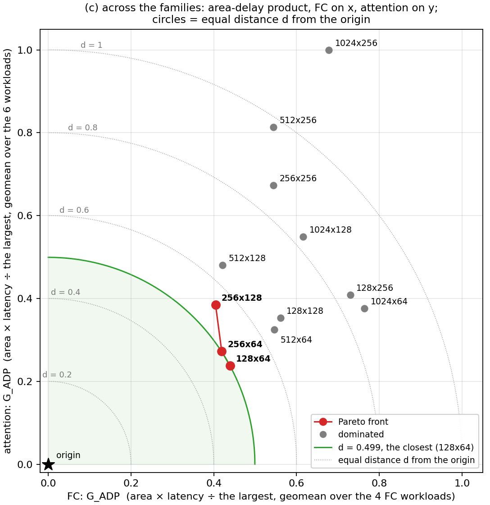

v3 DSE · VTR seeds 11, 13, 17 · 2026-10-16
Which crossbar size, rows R × columns C, gives the lowest latency and area? Attention: 72 builds of one head (6 shapes × 12 configs), each placed and routed with three VTR seeds. FC: the 48 rows of the v2 snapshot. One notation throughout: on each workload, a config's value is divided by the worst config's value, so the worst config scores 1 and lower is better; G is the geometric mean of those scores over a family's workloads, GA for area, GD for latency, GE for energy and GADP for area × latency. Per family the plot is GA against GD; across the families, each config's GADP in FC is x and in attention y. The Pareto front is the set of configs that no other config beats on both axes. GE is shown beside the fronts and is not part of them.
EDAP is energy × ADP, so the two orders differ only through energy: a config with a low GE moves up under EDAP, one with a high GE moves down. Rows in ADP order; # is the rank (1 = best); Δ # = the EDAP rank − the ADP rank, so + means worse under EDAP. Shaded: #1 under either metric.
#1 by ADP: 256 × 128; by EDAP: 512 × 128.
| ADP # | R × C | GADP | EDAP # | GEDAP | Δ # | GE |
|---|---|---|---|---|---|---|
| 1 | 256 × 128 | 0.404 | 2 | 0.202 | +1 | 0.424 |
| 2 | 256 × 64 | 0.419 | 4 | 0.242 | +2 | 0.489 |
| 3 | 512 × 128 | 0.421 | 1 | 0.152 | −2 | 0.306 |
| 4 | 128 × 64 | 0.439 | 9 | 0.439 | +5 | 0.848 |
| 5 | 256 × 256 | 0.544 | 8 | 0.293 | +3 | 0.456 |
| 6 | 512 × 256 | 0.544 | 3 | 0.203 | −3 | 0.317 |
| 7 | 512 × 64 | 0.546 | 5 | 0.246 | −2 | 0.383 |
| 8 | 128 × 128 | 0.561 | 11 | 0.518 | +3 | 0.783 |
| 9 | 1024 × 128 | 0.616 | 6 | 0.270 | −3 | 0.372 |
| 10 | 1024 × 256 | 0.678 | 7 | 0.291 | −3 | 0.365 |
| 11 | 128 × 256 | 0.730 | 12 | 0.745 | +1 | 0.866 |
| 12 | 1024 × 64 | 0.764 | 10 | 0.451 | −2 | 0.501 |
#1 under both: 128 × 64.
| ADP # | R × C | GADP | EDAP # | GEDAP | Δ # | GE |
|---|---|---|---|---|---|---|
| 1 | 128 × 64 | 0.238 | 1 | 0.150 | 0 | 0.470 |
| 2 | 256 × 64 | 0.272 | 2 | 0.199 | 0 | 0.544 |
| 3 | 512 × 64 | 0.325 | 5 | 0.303 | +2 | 0.696 |
| 4 | 128 × 128 | 0.353 | 3 | 0.217 | −1 | 0.458 |
| 5 | 1024 × 64 | 0.376 | 9 | 0.505 | +4 | 1.000 |
| 6 | 256 × 128 | 0.384 | 4 | 0.261 | −2 | 0.505 |
| 7 | 128 × 256 | 0.409 | 6 | 0.388 | −1 | 0.707 |
| 8 | 512 × 128 | 0.481 | 7 | 0.392 | −1 | 0.608 |
| 9 | 1024 × 128 | 0.549 | 10 | 0.599 | +1 | 0.812 |
| 10 | 256 × 256 | 0.673 | 8 | 0.457 | −2 | 0.506 |
| 11 | 512 × 256 | 0.814 | 11 | 0.639 | 0 | 0.586 |
| 12 | 1024 × 256 | 1.000 | 12 | 1.000 | 0 | 0.745 |

| R × C | GA area | GD latency | GE energy | front |
|---|---|---|---|---|
| 512 × 128 | 0.353 | 0.710 | 0.306 | yes |
| 512 × 256 | 0.399 | 0.813 | 0.317 | |
| 1024 × 128 | 0.404 | 0.909 | 0.372 | |
| 1024 × 256 | 0.442 | 0.914 | 0.365 | |
| 512 × 64 | 0.447 | 0.728 | 0.383 | |
| 256 × 128 | 0.467 | 0.516 | 0.424 | yes |
| 1024 × 64 | 0.483 | 0.942 | 0.501 | |
| 256 × 64 | 0.511 | 0.489 | 0.489 | yes |
| 256 × 256 | 0.532 | 0.609 | 0.456 | |
| 128 × 64 | 0.740 | 0.354 | 0.848 | yes |
| 128 × 128 | 0.805 | 0.415 | 0.783 | |
| 128 × 256 | 0.902 | 0.482 | 0.866 |

| R × C | GA area | GD latency | GE energy | front |
|---|---|---|---|---|
| 128 × 64 | 0.449 | 0.522 | 0.470 | yes |
| 256 × 64 | 0.457 | 0.589 | 0.544 | |
| 512 × 64 | 0.473 | 0.678 | 0.696 | |
| 1024 × 64 | 0.497 | 0.747 | 1.000 | |
| 128 × 128 | 0.593 | 0.589 | 0.458 | |
| 256 × 128 | 0.601 | 0.632 | 0.505 | |
| 512 × 128 | 0.624 | 0.761 | 0.608 | |
| 1024 × 128 | 0.673 | 0.806 | 0.812 | |
| 128 × 256 | 0.677 | 0.597 | 0.707 | |
| 256 × 256 | 0.872 | 0.763 | 0.506 | |
| 512 × 256 | 0.920 | 0.874 | 0.586 | |
| 1024 × 256 | 1.000 | 0.988 | 0.745 |
FC rewards large crossbars: a larger array holds more weights per tile, so a layer needs fewer tiles and less area, at the cost of longer passes. Attention rewards small crossbars: its crossbar count is set by the mapping, not by the array size, and each crossbar works on an I × I window (I = min(R, C)). A larger array adds area, energy per pass and soft logic, but no useful work.
| R × C | FC crossbars | FC tile area | FC cycles | FC MHz | attention crossbars | attention CLB area | attention cycles | attention MHz |
|---|---|---|---|---|---|---|---|---|
| 128 × 64 | 30 | 94 % | 52 | 379 | 231 | 86 % | 12,218 | 130 |
| 256 × 64 | 15 | 83 % | 77 | 401 | 227 | 85 % | 14,436 | 131 |
| 256 × 128 | 8 | 89 % | 90 | 440 | 225 | 80 % | 13,696 | 126 |
| 512 × 128 | 4 | 88 % | 128 | 445 | 224 | 77 % | 16,960 | 120 |
| 1024 × 256 | 2 | 93 % | 172 | 451 | 223 | 65 % | 22,136 | 110 |
Means over each family's workloads; area shares from the VPR counts.
Architecture. FC is a weight-stationary GEMV: the crossbars store the weights, 1 to 64 tiles per build. Attention multiplies activations by activations, so its crossbars act as EXP and LOG converters with identity weights on one I-wide window per pass. Their number follows the head dimension (78, 146 or 278–297 crossbars for d = 16, 32, 64) and hardly changes with the array size; at 1024 × 64 only 6 % of a converter's cells are in use.
Area. FC area is crossbar tiles (75–96 %), and a larger tile stores a weight in less area (8× the grid area for 32× the cells), so FC area falls as the array grows. Attention area is soft logic (65–86 % CLB: about 10.4k CLBs at C = 64, 12.9k at 128, 17.5k at 256), plus crossbar tiles that grow with R × C.
Latency. FC is one pass per tile, 52–172 cycles at 358–451 MHz. Attention takes 12k–22k cycles at 110–131 MHz. Its projections stream every token through one GEMM copy and end at n × (⌈min(dmodel, R)/5⌉ + 8) cycles, a median 50 % of the total (36–86 %); that part grows with R only while dmodel > R. The rest is bound by the score stream into the softmax (one 40-bit port, about n²/5 cycles), whatever the array size.
Energy. A crossbar pass is priced as the full array (14.8 pJ at 128 × 64 up to 103.4 pJ at 1024 × 256). FC needs fewer passes as the array grows (30 to 2), so its energy falls with size. Attention's pass count depends on I only (about 62k, 31k, 16k at I = 64, 128, 256), so at a fixed I its energy rises with R.
Assumptions behind it. The fixed attention mapping (the crossbar count does not follow the array size), the full-array pass price, one projection copy, the 40-bit ports, and FC as a single GEMV. Changing any of them could move the attention ranking.

| # | R × C | FC GADP | attention GADP | d | FC GE | attention GE | front |
|---|---|---|---|---|---|---|---|
| 1 | 128 × 64 | 0.439 | 0.238 | 0.499 | 0.848 | 0.470 | yes |
| 2 | 256 × 64 | 0.419 | 0.272 | 0.500 | 0.489 | 0.544 | yes |
| 3 | 256 × 128 | 0.404 | 0.384 | 0.558 | 0.424 | 0.505 | yes |
| 4 | 512 × 64 | 0.546 | 0.325 | 0.635 | 0.383 | 0.696 | |
| 5 | 512 × 128 | 0.421 | 0.481 | 0.639 | 0.306 | 0.608 | |
| 6 | 128 × 128 | 0.561 | 0.353 | 0.663 | 0.783 | 0.458 | |
| 7 | 1024 × 128 | 0.616 | 0.549 | 0.825 | 0.372 | 0.812 | |
| 8 | 128 × 256 | 0.730 | 0.409 | 0.837 | 0.866 | 0.707 | |
| 9 | 1024 × 64 | 0.764 | 0.376 | 0.852 | 0.501 | 1.000 | |
| 10 | 256 × 256 | 0.544 | 0.673 | 0.866 | 0.456 | 0.506 | |
| 11 | 512 × 256 | 0.544 | 0.814 | 0.979 | 0.317 | 0.586 | |
| 12 | 1024 × 256 | 0.678 | 1.000 | 1.208 | 0.365 | 0.745 |
Latency = cycles ÷ Fmax, with Fmax the mean of the three VTR seeds; area counts CLBs, crossbar tiles and memory blocks from VPR. The 16 attention builds of the d = 64 shapes at C = 64 use VPR's own memory count, 5–8 blocks above the simulator's prediction.
The three panels side by side (for a paper): v3/dse/results/adp/dse_la.pdf. Scores: v3/dse/results/adp/latency_area.json. The earlier EDAP rankings stay in v3/dse/results/edap/ranking_*.json.